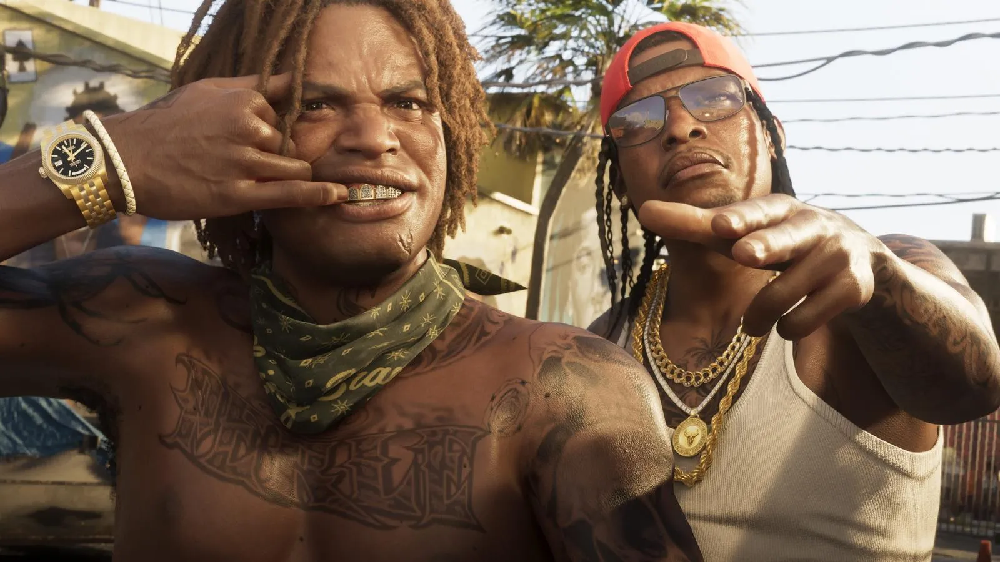

Папа Одасити (Papa Audacity) в GTA 6: все задания и прохождение
Опубликовано:

- 6 заданий в цепочке — ниже каждое по шагам.
- Цепочка засчитывается в трофей Strangers & Freaks.
Папа Одасити — каскадёр в белом костюме и зеркальном мотошлеме, лицо компании AudaCity и её криптомонеты DacityCoin. Его цепочка — одна из самых безумных в игре: мотоциклы на крышах, прыжок с вертолёта в стадион, прогулка по крылу самолёта. Открывается в главе 3: подсказка — плакат шоу в лобби квартиры в Бэйсайде, сам Папа ждёт в парке на юге Ocean Beach.
Всего шесть заданий; каждое следующее приходит через несколько игровых дней. Главный приз — не в наградах за миссии, а в DacityCoin: если продать монету в нужный момент финала, выйдет около $25 000.
Все задания
| Задание | Где и когда |
|---|---|
| The Unknown Stuntman | глава 3 |
| Trial by Tire | глава 3 |
| Quit Your Job, Sell Your House | глава 3 |
| AudaCity Stunts | глава 3 |
| Catching a Whale | глава 3 |
| The Audacity | финал |
The Unknown Stuntman
- Прочитайте плакат AudaCity в лобби квартиры в Бэйсайде — появится метка.
- Поговорите с каскадёром в белом костюме.
- Закрепите газовый баллон сбоку трамплина в конце трассы.
- Вернитесь к началу и подожгите фитиль у мотоцикла — Папа полетит.
- Поговорите с инженером AudaCity и выберите «Рассказать подробности».
- Через несколько игровых дней придёт следующее задание.
Trial by Tire
- Сядьте на мотоцикл и пройдите трассу на нижнем этаже, не задевая розовые коробки.
- Поднимитесь по пандусу на крышу.
- Наберите множитель больше x50 примерно за минуту: большие трамплины посередине дают по x10.
- Прыгните с углового трамплина в воду и доплывите до инженера.
- Сначала собирайте большие трамплины — на мелких множитель растёт слишком медленно.
Quit Your Job, Sell Your House
- На лифте поднимитесь на крышу, идите за Папой к вертолётной площадке.
- Пока пилот отвлёкся, угоните вертолёт.
- Наберите высоту над Каталан-Ки, прыгайте и раскройте парашют по команде Папы.
- Летите за ним в стадион.
- Спуститесь под фиолетовый навес и снимите его прыжок снизу.
- Отнесите разбившегося каскадёра в пикап и везите в медцентр, уходя от полиции: помогает прыжок с моста.
- Пикап AudaCity Sandking можно оставить себе или продать — больше $10 000.
AudaCity Stunts
- Статуя на острове Далтон (скульптурный парк): дороги туда нет — паром, лодка или вертолёт; заезжайте по спине золотой статуи.
- Leonida Power and Light: грунтовый трамплин через реку.
- Парковка в Ocean Beach: с южного края крыши в переулок.
- Медцентр St. Vitus: с крыши через северо-восточный трамплин.
- Песчаный карьер Mastodon: через дыру в рекламном щите на шоссе — рабочие быстро вызывают полицию.
- Даунтаун, Piker Financial Center: с парашютом с крыши, приземлиться на площади.
- Надпись VICE CITY: по трамплинам на баржах через буквы.
- Первые пять трюков — в любом порядке, последние два Папа присылает потом.
Catching a Whale
- Взлетите с аэродрома Sundown.
- Пролетите маршрут: гольф-поле Leaf Links, под мостом, гавань, Tequesta Retreat, здание суда в Даунтауне, круизный лайнер.
- Над Ocean Beach держите самолёт ровно — Папа гуляет по крылу.
- Наберите высоту, дайте Папе управление и прыгайте с парашютом на яхту.
- Главное — ровный полёт на участке с крылом: резкие движения сбрасывают трюк.
The Audacity
- У лифта встретьте инженеров и поднимитесь на вечеринку запуска монеты.
- За кулисами Папа просит выполнить трюк вместо него.
- Перед прыжком продайте DacityCoin в приложении — это пик цены.
- Разгонитесь на мотоцикле и приземлитесь в бассейн на крыше отеля.
- Пробейтесь к лифту, уйдите от полиции и позвоните Папе.
- Продавайте монету перед финальным прыжком: по данным гайдов, в лифте она стоит около $22 350, перед прыжком — около $25 250. Если тянуть до конца миссии, монета обвалится до нуля.
Частые вопросы
Сколько заданий у Папы Одасити?
Шесть: The Unknown Stuntman, Trial by Tire, Quit Your Job, Sell Your House, AudaCity Stunts, Catching a Whale и The Audacity.
Когда продавать DacityCoin?
В финальной миссии The Audacity, прямо перед прыжком на мотоцикле: около $25 000. Если не продать до конца миссии, монета обесценится.
Засчитывается ли Папа Одасити в Strangers & Freaks?
Да, его цепочка — одна из восьми, нужных для трофея.
Где найти Папу Одасити?
В парке на юге Ocean Beach с главы 3; подсказка — плакат в лобби квартиры в Бэйсайде.
Источники: PowerPyx — «The Unknown Stuntman», «Quit Your Job, Sell Your House», «AudaCity Stunts», 25–26.11.2026; gta.guide — «Papa Audacity Chain», 26.11.2026; LeonidaPlayers — «Papa Audacity missions», 25.11.2026; Game8, GTABase, KeenGamer — задания Папы Одасити, 2026. Кнопки — для PS5, в скобках — Xbox. Названия — как в английской версии игры.